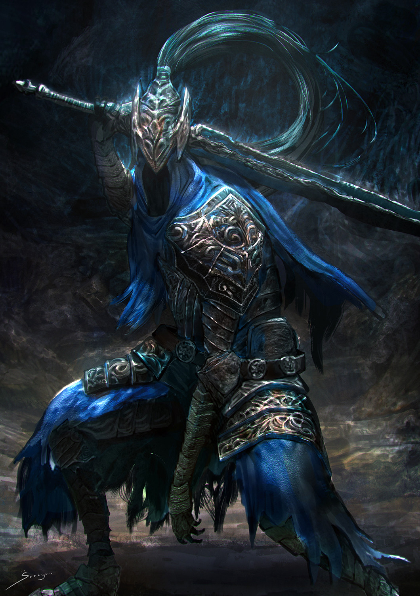

Caballero Artorias, el Caminante del Abismo
LORE Artorias, uno de los Cuatro Caballeros de Gwyn, era conocido por su habilidad para combatir la oscuridad. Con su Anillo del Lobo y un espadón maldito, cazaba Espectros Oscuros y podía atravesar el Abismo gracias a un pacto con estas criaturas, aunque esto lo corrompió. Acompañado por Sif, el Gran Lobo Gris, y amigo de Alvina, protegió a Oolacile del Abismo creado por Manus, sacrificándose para salvar a Sif. Artorias fue consumido por la oscuridad y finalmente derrotado por el No Muerto Elegido. Su tumba, en el Jardín Tenebroso, es custodiada por Sif y Alvina. Su legado inspiró a los Vigilantes del Abismo de Farron, quienes continuaron su lucha contra la oscuridad con un estilo feroz y armas inspiradas en las suyas.
Descripción Artorias, también conocido como Artorias el Caminante del Abismo, es un jefe del videojuego Dark Souls: Prepare to Die Edition. Cuando el No muerto elegido encuentra a Artorias, el caballero demuestra que ya ha sido corrompido por el Abismo: la razón del aspecto putrefacto de su armadura y el aura de oscuridad que exuda. Su brazo roto es probablemente el resultado tras detener la propagación de la oscuridad que amenazaba con devorar a su compañero lobo por medio de un escudo ahora desaparecido. Posee un espadón que también ha sido consumido, sin embargo, aún está lejos de ser ineficaz. Tras perder su cordura, el caballero se mueve de una manera salvaje, gritando por debajo de la cubierta azul de su yelmo.